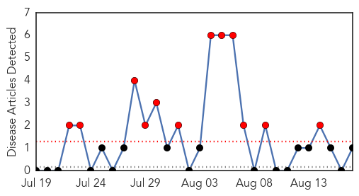
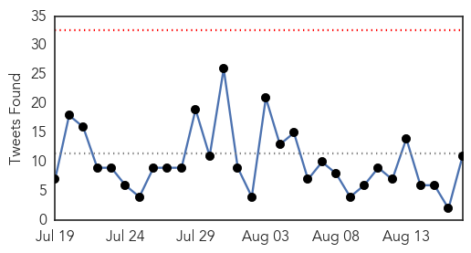
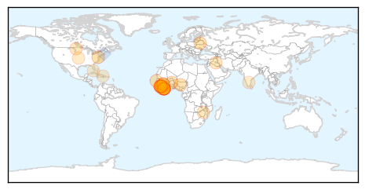

Mumps
30-Day Web Trend
12 alerts, 0 warnings

30-Day Twitter Trend
0 alerts, 0 warnings

Article Locations
Article Confidences

Top Articles:
Top Tweets:
-
No tweets found for Aug 17, 2015
Ebola
30-Day Web Trend
1 alerts, 0 warnings

30-Day Twitter Trend
0 alerts, 0 warnings

Article Locations
Article Confidences

Top Articles:
- 1.000
- Sierra Leone Has First Week of No New Ebola Cases
- 1.000
- No new Ebola cases reported in Sierra Leone last week: WHO - Xinhua
- 0.999
- W. Africa travelers allowed through just 5 U.S. airports
- 0.996
- Sierra Leone Free From New Ebola Infections
- 0.992
- UN official: Ebola epidemic could be defeated by end of 2015
- 0.989
- Ebola sensitization: President Koroma in Kambia, Port Loko
- 0.989
- UN official: Ebola epidemic could be defeated by end of 2015
- 0.987
- Sierra Leone Ends Ebola Quarantine for 500 Villagers — Naharnet
- 0.984
- Ebola Epidemic Could be Defeated by End of 2015
- 0.983
- Ebola prevention comes down to hygiene
- 0.973
- War on Ebola gets a shot in the arm as cooperation continues
- 0.971
- "We must stay the course" President urges the people of Kambia and Port Loko
- 0.954
- Sierra Leone lifts last major Ebola quarantine as cases recede
- 0.935
- How to support girls in post-Ebola Sierra Leone
- 0.927
- How We Fought Ebola in West Africa- Obasanya
- 0.879
- Amidst Ebola Crisis, Coordination and Long-Term Thinking Pay Off
- 0.873
- Miscarriage on the streets, shattered love lives… how Ebola ruined Liberian families
- 0.871
- APORA Supports Fight Against Infectious Diseases in Africa
- 0.871
- APORA Supports Fight Against Infectious Diseases in Africa
- 0.776
- Public health funding is crucial - MinotDailyNews.com
- 0.769
- WHO launches campaign to protect and honour health workers in conflict zones
- 0.741
- ‘Beware of raw health data on social media’
- 0.736
- LET'S ALL BE MONITORS OF THE IMPLEMENTATION OF THE POST EBOLA RECOVERY PLAN
- 0.707
- Despite Ebola Crisis, Sierra Leone Priest Speaks of Hope and Peace
- 0.652
- Fitzgibbon Pays Farewell Call on President Koroma
- 0.601
- IIMB professor nominated to WHO’s International Health Regulations Review Committee: Apoorva N
- 0.581
- Shutesbury native joins elite Centers for Disease Control team
- 0.539
- Emergency preparedness for the modern era
Top Tweets:
- 0.937
- Sierra Leone lifts last major Ebola quarantine as cases recede - Fox News http://t.co/L8kvWTuRwK ebola EVD
- 0.839
- Sierra Leone ends Ebola quarantine for 500 villagers - Yahoo News UK http://t.co/qY5sFdpJAD ebola EVD
- 0.818
- Sierra Leone Has First Week of No New Ebola Cases - TIME http://t.co/sGhTnftbUr ebola EVD
- 0.749
- Breakthrough Ebola Vaccine Provides Hope for West Africa - DOGOnews http://t.co/G5VL1iQv2y ebola EVD
- 0.747
- How We Fought Ebola in West Africa- Obasanya - The News http://t.co/ZD46yV8zuD ebola EVD
- 0.592
- Ebola Isn't Over Yet - New York Times http://t.co/Sc8AH8Fm5W ebola EVD
- 0.562
- Monrovia: Clinic Opens for Ebola Survivors - The News http://t.co/W3wr9bW8LX ebola EVD
- 0.558
- Point-of-Care for Ebola - R & D Magazine http://t.co/LdzhlDSk32 ebola EVD
- 0.524
- More signs of hope in West Africa. But complacency would be dangerous. Ebola https://t.co/YzLWA2JCJK
- 0.510
- Dallas-area taxpayers paid more than $825K in Ebola costs - KTRK-TV http://t.co/OHxfesOKBb ebola EVD
- 0.510
- Dallas-area taxpayers paid more than $825K in Ebola costs - KTRK-TV http://t.co/Bl0hODjLiD ebola EVD